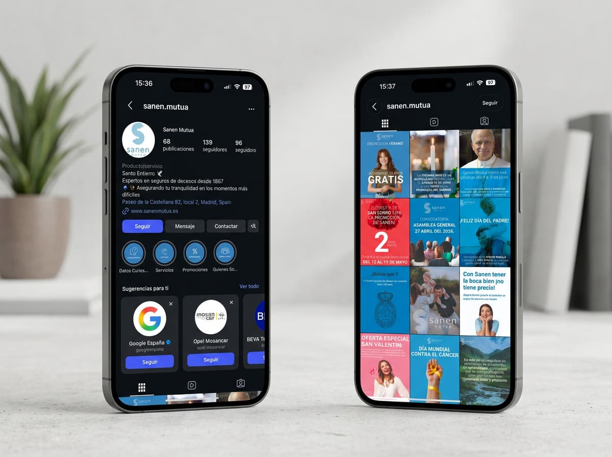
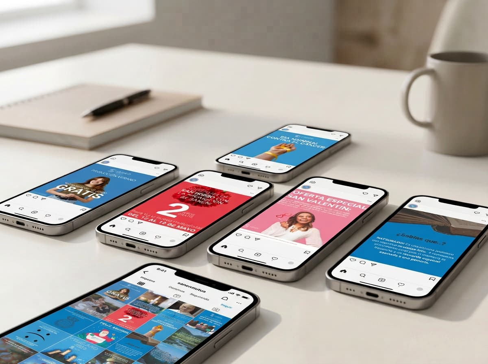

Redes sociales
Sanen Mutua, seguro de decesos
Para Sanen desarrollé desde cero la presencia visual de la marca en redes sociales, ya que la empresa todavía no contaba con un perfil de Instagram. El proyecto incluyó la creación de publicaciones, stories y portadas para las historias destacadas, definiendo una línea visual coherente con la identidad de la marca.
Además, diseñé y edité reels y piezas audiovisuales adaptadas a Instagram y otras plataformas sociales, con el objetivo de crear contenido atractivo, mantener una comunicación visual consistente y facilitar la difusión de la marca en distintos canales digitales.
- Contenido digital
- Identidad visual
- Diseño gráfico
-

-

-

- Cliente
- Sanen Mutua, seguro de decesos
- Rol
- Diseño gráfico y digital
- Disciplina
- Redes sociales
- Herramientas
- Photoshop
- Illustrator
- Premiere Pro